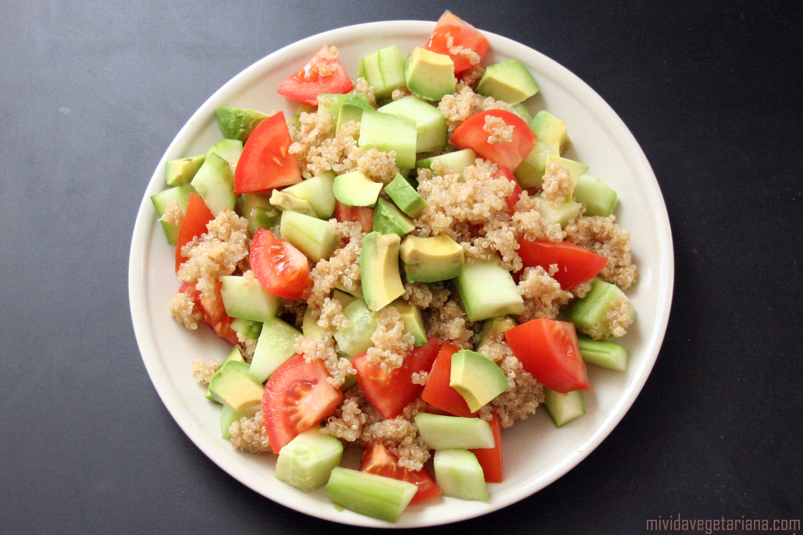
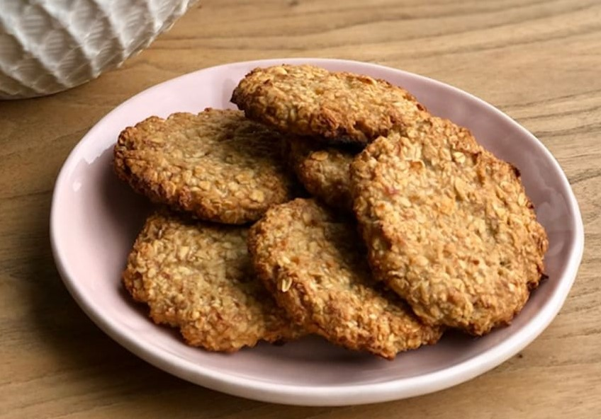
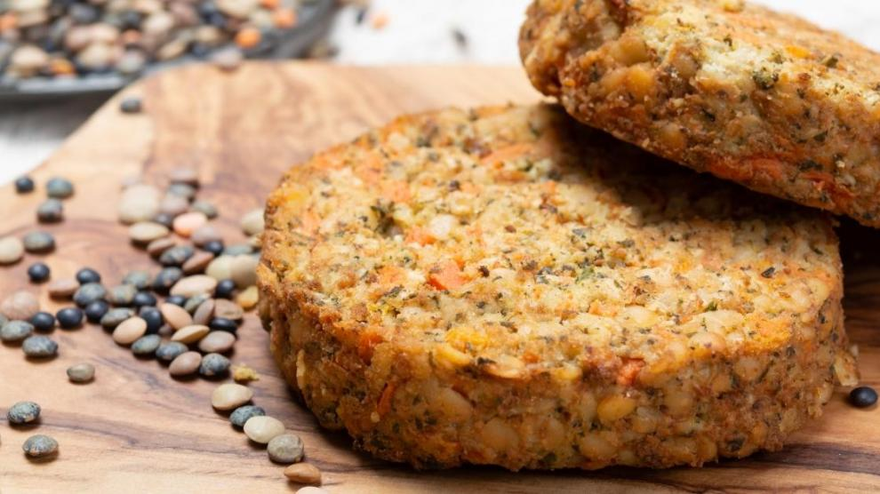

RECETAS VEGGIES
Ensalada de quinoa y aguacate
Ingredientes
- 1 taza de quinoa cocida
- 1 aguacate maduro
- 1/2 taza de cebolla roja picada
- 1/2 taza de tomate cherry cortado por la mitad
- 1/4 taza de cilantro fresco picado
- Jugo de 1 limón
- 1 cucharada de aceite de oliva
- Sal y pimienta al gusto
Procedimiento
Mezclar la quinoa cocida con la cebolla roja, los tomates cherry y el cilantro en un tazón. En otro tazón, mezclar el aguacate, el jugo de limón y el aceite de oliva. Aplastar el aguacate con un tenedor hasta que esté suave. Mezclar el aguacate con la quinoa y sazonar con sal y pimienta al gusto. Servir frío
Ingredientes
- 2 plátanos maduros
- 1 taza de avena
- 1/2 taza de pasas
- 1/2 taza de nueces picadas
- 1 cucharadita de canela molida
Procedimiento
Precalentar el horno a 180°C. En un tazón, aplastar los plátanos hasta que estén suaves. Agregar la avena, las pasas, las nueces y la canela. Mezclar bien. Hacer bolitas con la mezcla y colocarlas en una bandeja para hornear forrada con papel pergamino. Aplastar las bolitas con la palma de la mano para formar las galletas. Hornear durante unos 15-20 minutos hasta que estén doradas. Dejar enfriar antes de servir.
Galletas de avena y banana
Hamburguesas de lentejas y tofu
Ingredientes
- 400 gr. de lentejas cocidas
- 275 gr. de tofu
- 70 gr. de pan rallado
- 2 dientes de ajo
- 1 cebolla
- 1 cucharadita de mostaza de Dijon
- 1 cucharadita de oregano
- 1 cucharadita de pimentón dulce
- Aceite de oliva
- Sal y pimienta al gusto
Procedimiento
Primero de todo hay que triturar el ajo, la cebolla, el orégano, el pimentón, la mostaza y la mitad de las lentejas. Lo más cómodo es usar una picadora, con la que tendréis que dar golpes secos y rápidos, para que no llegue a formarse una pasta de tipo puré. Si no disponéis de picadora, lo que podéis hacer es cortar la cebolla y los ajos bien finitos, chafar un poco las lentejas y mezclarlo todo con el resto de ingredientes. A continuación, rallaremos el tofu y lo añadiremos a los ingredientes que hemos picado con anterioridad, junto con el resto de las lentejas, el pan rallado y un poco de sal y pimienta. Mezclaremos bien hasta obtener una masa uniforme y compacta, con la que poder dar forma a nuestras hamburguesas. Una vez hemos dado forma a cada hamburguesa (cada una debería pesar entre 150 y 200 gr.), las pasaremos por la plancha con un poco de aceite hasta que estén bien doradas por cada lado. En este caso hemos acompañado la hamburguesa con pimientos del piquillo y aguacate, aunque vosotros podéis probar vuestras propias combinaciones.
Ingredientes
- 1 palta madura
- 1/2 taza de azúcar integral
- 1/2 taza de harina de almendras
- 1/2 taza de cacao en polvo
- 1 cucharadita de esencia de vainilla
- 1/4 cucharadita de sal
- 1/2 taza de chips de chocolate vegano
Procedimiento
Precalentar el horno a 180°C. En un tazón grande, mezclar la palta y el azúcar hasta que estén suaves. Agregar la harina de almendras, el cacao en polvo, la esencia de vainilla y la sal. Mezclar bien. Añadir los chips de chocolate y mezclar de nuevo. Verter la mezcla en un molde para hornear forrado con papel manteca. Hornear durante unos 20-25 minutos hasta que estén firmes al tacto. Dejar enfriar antes de servir.